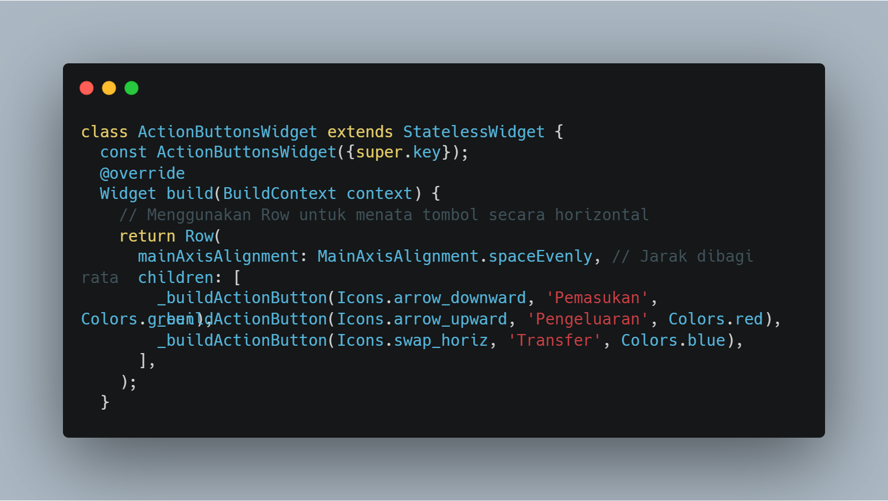
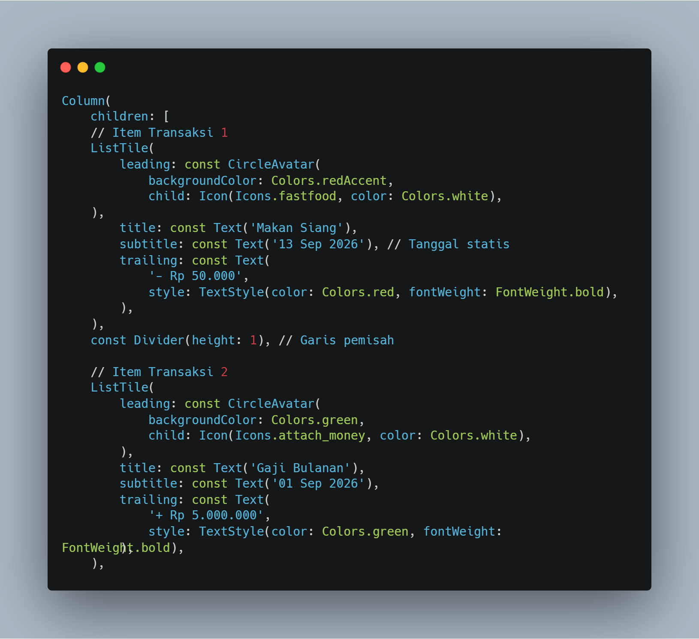
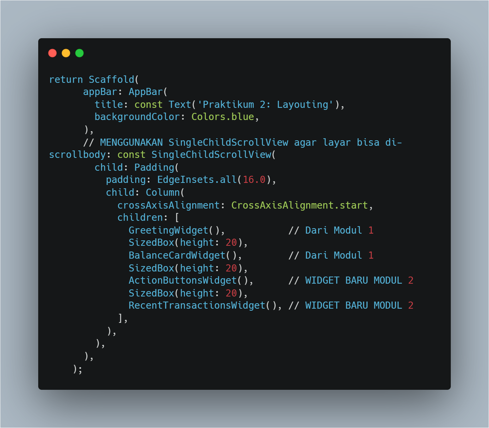
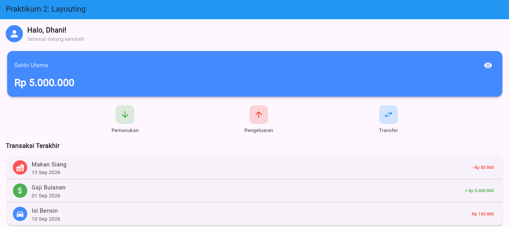
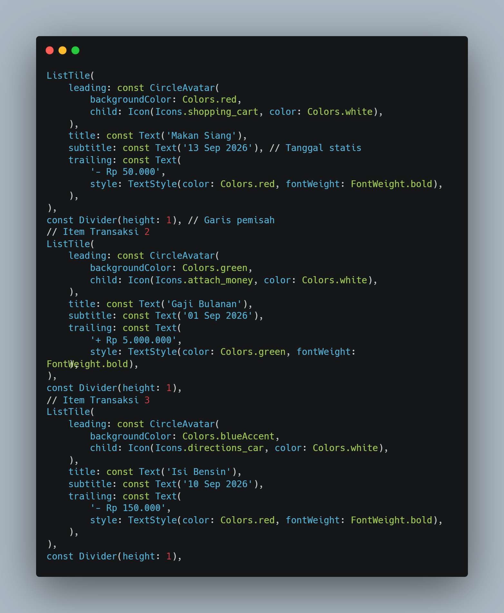
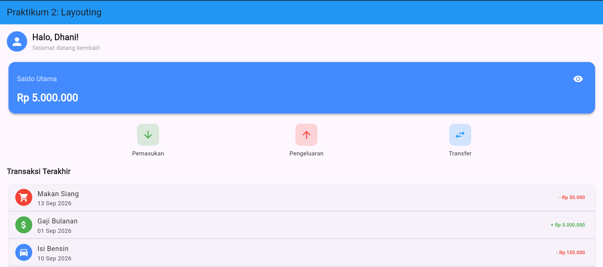
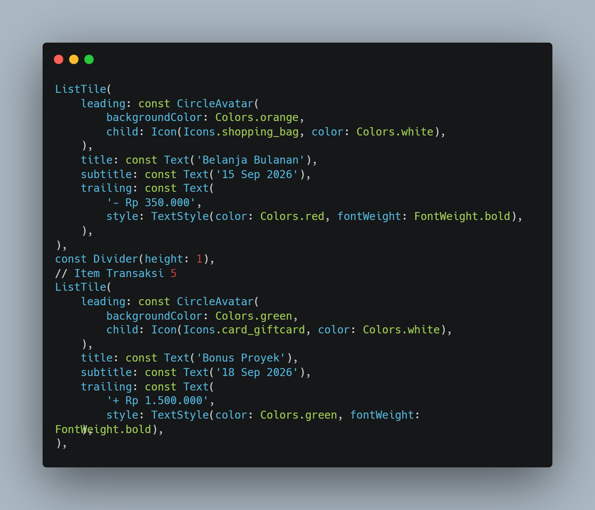
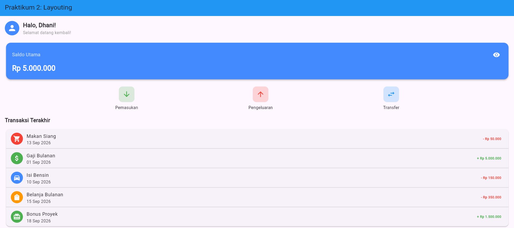

Praktikum 2: Layouting dan Styling Dasar
A. Pendahuluan
Pengembangan aplikasi mobile dengan Flutter memberikan kemudahan dalam menciptakan antarmuka pengguna yang modern dan responsif berkat konsep tata letak berbasis widget. Pengorganisasian elemen visual secara terstruktur sangat krusial agar informasi dapat ditampilkan dengan jelas dan mudah diakses oleh pengguna di berbagai ukuran layar perangkat mobile.
Praktikum ini menitikberatkan pada penerapan dasar-dasar layouting dan styling di Flutter melalui studi kasus pembuatan antarmuka aplikasi Expense Tracker. Dalam kegiatan ini, dilakukan eksplorasi terhadap penggunaan widget Row, Column, Container, dan ListTile, penyusunan tata letak yang dapat digulir menggunakan SingleChildScrollView, serta penyelesaian tugas berupa modifikasi tampilan visual dan penambahan data transaksi.
B. Tujuan
Tujuan dari praktikum ini adalah:
- Memahami prinsip dasar layouting dan styling di Flutter melalui pemanfaatan widget Row, Column, Container, dan ListTile.
- Menggunakan Row untuk menyusun elemen secara horizontal dan Column untuk menata elemen secara vertikal dalam membangun antarmuka aplikasi.
- Menangani masalah overflow pada tampilan layar dengan menerapkan widget SingleChildScrollView.
- Menerapkan kustomisasi warna pada teks nominal transaksi guna membedakan antara kategori pemasukan dan pengeluaran.
- Menambahkan data transaksi fiktif baru secara terstruktur ke dalam daftar riwayat transaksi.
C. Langkah Praktikum
1. Menata Tombol Aksi (Row)
Kode ini mengatur tiga tombol tindakan ("Masuk", "Keluar", dan "Transfer") agar tersusun secara horizontal memakai widget Row. Dengan menetapkan mainAxisAlignment: MainAxisAlignment.spaceEvenly, ruang di antara ketiga tombol tersebut dibagi secara otomatis dan merata. Tampilan visual setiap tombol dibentuk melalui fungsi pembantu _buildButton.

2. Menata Riwayat Transaksi (Column + ListTile)
Kode ini memanfaatkan widget Column untuk menyusun daftar transaksi secara vertikal dari atas ke bawah dengan perataan ke kiri. Di dalamnya, widget Text digunakan sebagai judul bagian, sementara setiap entri riwayat dibuat menggunakan ListTile yang secara otomatis menempatkan ikon di sisi kiri, nama transaksi di tengah, dan nilai nominal di ujung kanan dengan tampilan yang rapi.

3. Menggabungkan Dashboard (Scrollable)
Kode ini berperan menyatukan seluruh komponen antarmuka dari Modul 1 dan Modul 2 ke dalam satu halaman utama. Penggunaan SingleChildScrollView memungkinkan halaman digulir secara vertikal, sehingga menghindari masalah overflow ketika jumlah komponen bertambah banyak. Widget Padding ditambahkan untuk memberikan jarak tepi sebesar 16 piksel di sekeliling Column yang membungkus semua elemen tersebut.

4. Hasil Akhir (Mockup Dashboard)
Setelah seluruh komponen digabungkan, aplikasi menampilkan mockup dashboard expense tracker yang terdiri dari tombol aksi di bagian atas, diikuti dengan riwayat transaksi yang dapat digulir secara vertikal tanpa mengalami overflow.

D. Tugas
- Pada widget Daftar Transaksi (ListTile), ubah warna trailing text pengeluaran menjadi merah dan text pemasukan menjadi hijau.


- Tambahkan 2 transaksi fiktif baru ke dalam daftar "Transaksi Terakhir" di bawah kode yang sudah ada.


E. Kesimpulan
Berdasarkan kegiatan praktikum yang telah dijalankan, pembangunan antarmuka aplikasi Expense Tracker berhasil dicapai dengan mengombinasikan berbagai widget layouting pada Flutter secara optimal. Pemakaian Row mempermudah penyusunan tombol aksi secara mendatar, Column membantu menata daftar transaksi secara tegak lurus, dan SingleChildScrollView menjamin seluruh konten tetap dapat dijangkau tanpa mengalami overflow ketika jumlah transaksi bertambah.
Di samping itu, penerapan gaya pada widget ListTile terbukti menciptakan perbedaan visual yang jelas antara transaksi pemasukan dan pengeluaran lewat variasi warna pada teks nominal. Penambahan data transaksi baru juga menunjukkan keluwesan struktur kode yang telah dirancang, sehingga aplikasi menghadirkan antarmuka yang tertata, kaya informasi, dan mudah untuk dikembangkan lebih jauh.